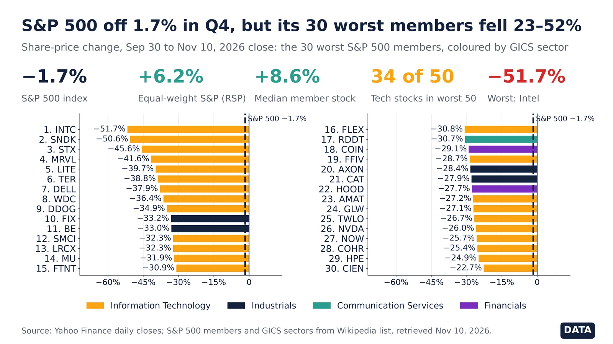
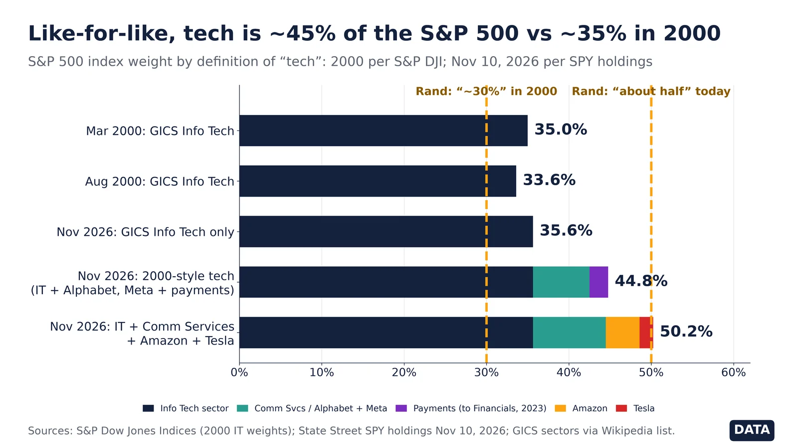
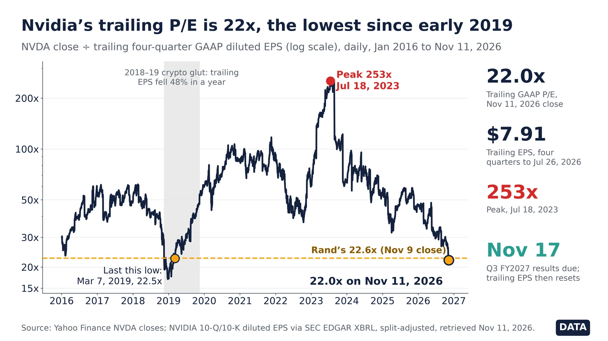

Q10. Bubble Watch

Market value of US nonfinancial corporate equities divided by GDP stood at 255% in Apr 2026 (quarter start), against 163% at the dot-com peak (Jan 2000) and a post-1945 median of 72%. Warren Buffett called this ratio 'probably the best single measure' of valuation in 2001. A high reading has preceded poor 10-year returns, but it has not timed crashes: the ratio has stayed above the 2000 peak for long stretches since 2020.
Sources: FRED NCBEILQ027S: Fed Z.1 nonfinancial corporate equities, market value FRED GDP: BEA nominal GDP

Robert Shiller's cyclically adjusted P/E for the S&P Composite. Long-run mean 17.5. Peaks: 32.6 in 1929, 44.2 in 1999, 38.6 in 2021; last value in the public file 35.2 (Sep 2024). Pattern count: only three prior readings above 30 (1929, 1997–2001, 2021) — 3 cycles, so by Michael Hentschel's rule a 'repeat' is suggestive, not proven. Note: the public Yale file we could reach ends Sep 2024.

Debit balances in customers' securities margin accounts reached $1,480bn in Sep 2026, up 31% from a year earlier. Earlier local peaks in margin debt came in March 2000, mid-2007 and late 2021, each shortly before a major market decline — three episodes in this 1997+ series, which is too few to treat as a reliable timing rule.
Sources: FINRA margin statistics

Both indexes indexed to their peaks. The Nikkei 225 fell to about 18% of its 1989 peak and did not regain it until Feb 2024, over 34 years. The Nasdaq lost about 78% and recovered in Apr 2015. Two cases only: they show what a bubble deflation can look like, not that one is due.
Sources: FRED NIKKEI225: Nikkei Inc. Nikkei 225 FRED NASDAQCOM: Nasdaq Composite

BIS total credit to the private non-financial sector (households and companies). China reached 201% of GDP in Oct 2025, up from 107% in 2008. Japan's ratio peaked at 214% in Oct 1993 before its lost decades; the BIS has long flagged rapid credit build-ups as a crisis warning.
Sources: FRED QCNPAM770A: BIS China FRED QJPPAM770A: BIS Japan FRED QUSPAM770A: BIS US FRED QXMPAM770A: BIS euro area BIS credit statistics

BIS real residential property price index for China was 85.1 in Jan 2026 (2010=100), 25% below its peak of 113.0 in Jul 2021. Property and related industries are commonly estimated at a quarter or more of China's economy.

The Kim-Wright 10-year term premium (Fed Board model) is the extra yield investors demand to lock money up for ten years instead of rolling short bills. It stood at 0.99 pts on Oct 16, 2026; October's monthly average (1.06) is the highest since April 2010, after averaging below zero in 2019-2021. A rising premium means long rates are climbing for reasons other than expected Fed policy: supply of Treasuries, inflation risk and doubts about fiscal discipline. Cycle count: the premium fell through most of 1990-2020, a single secular decline, so there is no multi-cycle base for predicting what level it 'should' reach. Treat it as a gauge, not a forecast.
Sources: FRED THREEFYTP10 (Kim-Wright term premium) FRED USREC

Equities hit 48.2% of US household financial assets in Q2 2026, a record. Source: Federal Reserve Z.1.
Data
- Q2 2026 (Data): 48.2%, the highest since the series began in 1945 (Q1 2026: 44.7%).
- Q4 2021 (Data): 41.0%, the previous post-2000 high.
- Q1 2000 (Data): 38.7%, the dot-com peak.
- Q4 1968 (Data): 30.0%, the 1960s peak.
Sources: FRED BOGZ1FL153064486Q (Fed Z.1) FRED USREC (NBER recessions)
Viral Oct 26, 2026 claim. The S-1 shows most of the loss was a non-cash charge.
Claim checked against Data
- Oct 26, 2026 (Claim): Rand Group posted that Anthropic 'lost $81B in six months'.
- Oct 27, 2026 (Data): Fortune says about $72B was a non-cash charge; the operating loss was $693M.
Doubt: the headline number is mostly an accounting charge, not cash burned. Rand later called it 'mostly paper' in replies.
Rebuttal: Fortune, Oct 27, 2026: Anthropic S-1 and the $81B loss
Original post: Rand Group, Oct 26, 2026
Sources: Fortune, Oct 27, 2026
Interpretation: a trader's chart call, Oct 23, 2026. Not data; no TVV rebuild.
Interpretation
- Oct 23, 2026 (Interpretation): Rand Group wrote that a silver breakdown 'would trigger a further freefall'.
Doubt: this is technical analysis of one price chart, with no supporting supply or demand data. Treat it as opinion.
Rebuttal: Silver Institute: World Silver Survey (supply and demand data)

Jun 2025 voluntary survey (~3,000 staff): ~77% millionaires, ~50% ≥$25M. Announced claim, not a filing.
Announced
- Jun 2025 (Announced): voluntary survey of ~3,000 Nvidia employees (~10% of workforce) reported 76–78% millionaires and ~50% with net worth ≥ $25M (Jesse Cohen / Kobeissi Letter coverage).
- Mechanism (Data): Nvidia ESPP offers ~15% discount with lookback; RSUs vest over time — equity, not cash salary, drives the wealth.
- Workforce (Data): Nvidia disclosed ~36k–42k employees across 2025 commentary; applying 50% to the full headcount is an extrapolation, not a census.
- Omitted: no company 10-K or proxy statement confirms the 50% / $25M figure.
Self-selection bias likely inflates the share (wealthier staff may be likelier to answer). Much of the wealth is unrealised stock; a large NVDA drawdown would cut paper net worth. Do not treat as audited Data.
Rebuttal: Yahoo Finance / coverage of Nvidia employee wealth survey
Original post: Michael A. Arouet, Nov 2026
Sources: Yahoo Finance: Nvidia producing unprecedented employee wealth Indian Express: Jensen Huang salary reviews / staff wealth context

Speculation: €1.85M tax > €1.5M profit on a €25M firm. Data: US equities 31% of assets vs deposits 10% (Fed Q2 2025).
Speculation + Data
- Speculation (Arouet comic): €1.5M profit, 40% income tax (€0.6M), 5% wealth tax on a €25M valuation (€1.25M) → combined tax €1.85M exceeds profit.
- Q2 2025 (Data): Fed Z.1 B.101.e — US household corporate equities (direct+indirect) $61.1T = 31.0% of total assets; currency & deposits $19.7T = 10.0%.
- Q2 2026 (Data): FRED BOGZ1FL153064486Q — equities 48.2% of US household financial assets (record).
- Argument that holds in Data: a large share of household wealth is in shares/business equity, so a wealth tax often requires selling or borrowing against illiquid assets. The comic’s 5% rate and forced closure are Speculation, not a calibrated policy simulation.
The 5% rate and €25M valuation are illustrative, not an enacted tax. Real wealth-tax designs (e.g. Spain, Norway, historical French ISF/IFI) use lower rates, exemptions and liquidity carve-outs. Do not read the comic as a forecast of any specific bill.
Rebuttal: Fed Z.1 B.101.e: Balance Sheet of Households and Nonprofit Organizations
Original post: Michael A. Arouet, Nov 2026
Sources: Fed Z.1 B.101.e (Sep 11, 2025 release) FRED BOGZ1FL153064486Q (equities share of household financial assets) Fed Survey of Consumer Finances materials

The S&P 500 closed at 7,376.86 on Friday Nov 6, down 2.68% on the week (from 7,580.07 on Oct 30) and 5.65% below its Oct 6 closing high of 7,818.93. Thursday Nov 5 alone was -4.36% (7,688.62 to 7,353.73), and the VIX closed at 25.64 on Nov 6 after 28.18 on Nov 5. Repeat count: of 74 completed S&P pullbacks of 5% or more since 1950, 26 (35%) eventually reached 10% and 11 (15%) reached 20%, a bear market. That is far more than three repeats, so the pattern is real: a 6% S&P dip becoming a bear market is the minority outcome (about 1 in 7). Calling this ‘just like 2000 or 2007’ from a 6% decline would be a stab in the dark. High-yield credit is not confirming a crash: the ICE BofA HY OAS went from 3.14 on Oct 28 to 3.48 on Nov 5, a rise of only 34 basis points.
- Week through Nov 6: S&P -2.68% to 7,376.86; Nasdaq -3.37%; SOX -12.15%; VIX 25.64.
- From the Oct 6 closing highs: S&P -5.65%; Nasdaq -10.94% (a correction); SOX -29.0%.
- Postwar repeat count: 11 of 74 completed 5%+ S&P pullbacks reached 20% (15%).
- HY OAS 3.14 → 3.48 (Oct 28 to Nov 5); credit did not spike with equities.
Sources: Yahoo Finance ^GSPC daily (S&P 500, 1927–Nov 6, 2026) Yahoo Finance ^IXIC daily (Nasdaq Composite) Yahoo Finance ^SOX daily (PHLX Semiconductor) Yahoo Finance ^VIX daily FRED SP500 (last print Nov 5: 7353.73, matches Yahoo) FRED NASDAQCOM FRED VIXCLS FRED BAMLH0A0HYM2 (ICE BofA US High Yield OAS)

From the Oct 6 closing highs through Friday Nov 6, the PHLX Semiconductor Index fell 29.0% (13,217.82 to 9,390.25), the Nasdaq Composite fell 10.94% — already a correction — and the S&P 500 fell 5.65%. Nvidia -22.0%, Alphabet -18.1% and Meta -17.4% led the Mag7 decline from those highs; Tesla was -5.9%. Apple +2.6%, Amazon +1.2% and Microsoft +0.2% rose or were flat. Meta’s decline was almost entirely before Oct 28 (738.88 on Oct 6 to 612.49 on Oct 28); from Oct 28 to Nov 6 it changed by only -0.4%. The week through Nov 6 itself was S&P -2.68%, Nasdaq -3.37% and SOX -12.15%, matching the tape; Thursday’s session was SOX -12.25%. From its June 22 closing high of 14,634.72, SOX is -35.8%. Repeat count: SOX has completed 6 declines of 30% or more since 1994 (out of 57 completed 5%+ pullbacks), so chip bear phases do repeat, but they are uncommon. This open episode would be another if the June high is not recaptured.
- Oct 6 → Nov 6: SOX -29.0%; Nasdaq -10.94%; S&P -5.65%.
- Nvidia -22.0%, Alphabet -18.1%, Meta -17.4%; Tesla -5.9%; Apple +2.6%, Amazon +1.2%, Microsoft +0.2%.
- SOX -35.8% from its June 22 high; 6 completed 30%+ SOX drops since 1994 (n=57 five-percent pullbacks).
- Nasdaq’s open drawdown (-10.9%) already meets the usual 10% ‘correction’ line.
Sources: Yahoo Finance ^SOX history Yahoo Finance ^IXIC history Yahoo Finance ^GSPC history Yahoo Finance NVDA history Yahoo Finance GOOGL, TSLA, AAPL, MSFT, META, AMZN history FRED NASDAQCOM (Nov 6 close 24579.42, matches Yahoo)

Sep 30–Nov 10, 2026 closes: S&P 500 −1.7%, Intel −51.7%, 34 of worst 50 tech. Yahoo Finance.
Data
- Sep 30–Nov 5, 2026 (Data): TVV re-ran Rand’s window on 502 current members. 48 of Rand’s 50 figures match within 0.1 pt: Intel −56.5%, Marvell −49.5%, Seagate −49.4%.
- Nov 5, 2026 (Data): 35 of the worst 50 are Information Technology, as Rand says. Sandisk was −53.7% (Rand −51.2%) and Super Micro −34.1% (Rand −34.8%).
- Nov 5, 2026 (Data): S&P 500 index −3.9%. Members’ combined market cap −4.6% at current Yahoo share counts (TVV approximation), against Rand’s −3.7%.
- Sep 30–Nov 10, 2026 (Data): S&P 500 −1.7%, equal-weight RSP +6.2%, median member +8.6%, and 76% of members are up.
- Nov 10, 2026 (Data): Intel is still the worst at −51.7%, then Sandisk −50.6% and Seagate −45.6%. 34 of the worst 50 are tech, and the bottom-50 cutoff is −14.0%.
- Method: one line per company (second share classes GOOG, FOX and NWS dropped). Members and sectors come from the Wikipedia S&P 500 list as of Nov 10, which may differ slightly from Rand’s list.
Rand says the index average “can hide a lot of damage.” That is true for chips and hardware, but the typical S&P 500 stock rose: the median member gained 7.1% to Nov 5 and 8.6% to Nov 10, and the equal-weight index is up 6.2%. The damage is concentrated, not broad.
Rebuttal: Yahoo Finance RSP (S&P 500 equal-weight) history
Original post: Rand Group, Nov 2026
Sources: Yahoo Finance ^GSPC daily (S&P 500) Yahoo Finance RSP history (S&P 500 equal-weight) Yahoo Finance INTC history Wikipedia: List of S&P 500 companies (members and sectors as of Nov 10, 2026) S&P Dow Jones Indices: S&P 500 Original post: Rand Group, Nov 2026

Nov 10, 2026 close vs all-time closing high: WYFI −79.4%, CRWV −73.5%, NBIS −53.3%. Yahoo Finance.
Data
- Nov 10, 2026 (Data): fall from all-time closing high: WYFI −79.4% (peak Jun 22, 2026), CIFR −77.6% (Jun 18, 2026), IREN −74.2% (Nov 5, 2025), CRWV −73.5% (Jun 20, 2025), APLD −66.4% (May 28, 2026).
- Nov 10, 2026 (Data): HUT −57.3% (peak Jun 2, 2026), WULF −56.7% (Jun 18, 2026), DOCN −56.1% (Jun 15, 2026), NBIS −53.3% (Jun 18, 2026).
- Rand vs TVV (Data): WYFI and CIFR are within 2 pts. Rand understates IREN (−69% vs −74.2%) and CoreWeave (−66% vs −73.5%), and overstates APLD, HUT, WULF, DOCN and NBIS by 3–6 pts. Rand gives no date or method.
- Context (Data): against the Dec 31, 2024 close, the seven names with that history are still up 41% (CIFR) to 384% (NBIS). HUT, WULF, DOCN and NBIS are also up in 2026 so far.
- Timing: CoreWeave’s Q3 results were scheduled after the Nov 10 close, so this chart uses pre-results prices.
- Method: WULF is measured from TeraWulf’s first trading day (Dec 14, 2021). Yahoo’s older WULF prices belong to predecessor IKONICS and would overstate the drop.
Peak-to-now drawdowns make “trade of the decade” look broken, but most of these peaks were short mid-2026 spikes, and longer-run holders are still well ahead. Rand’s nine figures don’t match the closes on any single date, so treat its exact percentages as approximate. This chart predates CoreWeave’s Q3 results, which were scheduled after the Nov 10 close.
Rebuttal: Yahoo Finance NBIS history
Original post: Rand Group, Nov 2026
Sources: Yahoo Finance CRWV history Yahoo Finance NBIS history Yahoo Finance IREN history Yahoo Finance WYFI history Yahoo Finance CIFR history Yahoo Finance WULF history CoreWeave investor relations Original post: Rand Group, Nov 2026

Nov 10, 2026: Info Tech 35.6%, broad tech 50.2%; 2000 IT peak 33.6–35%. SPY holdings, S&P DJI.
Data
- Nov 10, 2026 (Data): the GICS Information Technology sector alone is 35.6% of the S&P 500 (SPY daily holdings). Add Communication Services 8.8%, Amazon 4.1% and Tesla 1.6% and broad tech reaches 50.2%.
- Mar and Aug 2000 (Data): S&P Dow Jones Indices puts IT at 35% of the index in March 2000 and 33.6% in August 2000. Rand’s “around 30%” understates the dot-com peak.
- Like-for-like (Data, TVV reclassification): Alphabet and Meta were IT until 2018, and Visa, Mastercard and other payments firms until 2023. Adding them back (6.9% + 2.3%) gives 44.8% against 33.6–35% in 2000.
- Jul 2026 to Nov 2026 (Data): CME Group put IT at about 39% in July 2026. It has dropped to 35.6% after the Q4 chip and hardware sell-off (see M47).
- Nov 10, 2026 (Data): the 10 largest holdings make up 37.1% of the index (counting Alphabet’s two share classes separately), which supports Rand’s concentration point.
- Omitted: the Bloomberg sector series in Rand’s chart (paywalled) and a 2000 “broad tech” figure, because no primary 2000 weights for those groups were found.
Rand gets to “half vs 30%” by mixing definitions: a broad tech basket today against a narrower 2000 figure. On the same GICS IT definition, today’s 35.6% is about level with the 2000 peak. On a like-for-like 2000-style definition it is about 45%, 10 points higher, not 20.
Rebuttal: S&P DJI Indexology: These go to 11 — diversification with S&P 500 sectors
Original post: Rand Group, Nov 2026
Sources: SSGA: SPDR S&P 500 ETF Trust (SPY) SSGA: SPY daily holdings (xlsx) S&P DJI Indexology: These go to 11 — diversification with S&P 500 sectors S&P Global: Not your father's tech sector CME Group: What past sector concentrations tell us about today's tech-heavy S&P 500 Wikipedia: List of S&P 500 companies MSCI: Global Industry Classification Standard (GICS) Original post: Rand Group, Nov 2026

Nov 11, 2026 close: NVDA 22.0x trailing GAAP EPS, lowest since Mar 2019; peak 253x. Yahoo, SEC EDGAR.
Data
- Nov 9, 2026 (Data): NVDA closed at 22.6x trailing four-quarter GAAP diluted EPS, exactly Rand’s figure. It was 21.4x on Nov 10 and 22.0x on Nov 11 ($173.73; trailing EPS $7.91).
- Since 2019 (Data): the last time the multiple was this low was Mar 7, 2019 (22.5x). Rand says May 2019, a gap probably due to dating EPS at quarter-end rather than at the filing date, which TVV uses.
- Jul 18, 2023 (Data): the peak was 252.6x, so Rand’s “most people loved it at 200x” is right in scale.
- 2018–19 (Data): the last time the multiple was this low, trailing EPS then fell 48% in a year (Oct 2018 to Oct 2019, crypto glut). A low trailing P/E can come just before earnings fall.
- Nov 17, 2026: NVIDIA reports Q3 FY2027 results. The trailing EPS will reset then, and the multiple will move even if the price does not.
- Correction to the brief: Rand’s chart is trailing GAAP, not forward. Forward consensus history is not public, so no forward P/E is shown (omitted). Pairs with M48 (neo-cloud drawdowns).
“Cheapest since 2019” uses trailing earnings during a steep profit ramp, so the multiple falls fast by construction. The 2019 low came just before a 48% earnings drop. Whether 22x is cheap depends on forward earnings holding up, which this chart cannot show. Rand’s dates also differ slightly from TVV’s (May 2019 vs Mar 2019).
Rebuttal: NVIDIA: conference call for third-quarter financial results
Original post: Rand Group, Nov 2026
Sources: Yahoo Finance NVDA history SEC EDGAR XBRL company facts, NVIDIA (CIK 0001045810) SEC EDGAR: NVIDIA 10-Q filings NVIDIA investor relations: financial reports NVIDIA: conference call for third-quarter financial results Original post: Rand Group, Nov 2026

Nov 12, 2026 close: NVDA 10.5x next-FY EPS, 17.8x current-FY; S&P 500 18.3x forward. Yahoo, FactSet.
Data + Projection
- Nov 11–12, 2026 (Data): NVIDIA’s 8-K says Jensen Huang resigned as president, CEO and director effective Nov 11. CFO Colette Kress is interim CEO and keeps the CFO role. The “BREAKING” post is real.
- Oct 6 to Nov 12 (Data): NVDA’s record close was $239.24 on Oct 6. It closed $173.73 on Nov 11, opened $151.01 on Nov 12 (low $148.80) and closed $166.19, 30.5% below the record.
- Nov 12 (Data): Rand’s 9.6x is $152 (an intraday price, not a close) over next-fiscal-year consensus EPS of $15.85. At the $166.19 close it is 10.5x.
- Nov 12 (Data): on current-fiscal-year EPS ($9.32) NVDA is 17.8x, about level with the S&P 500. The “cheaper than the market” claim holds only on next-year EPS.
- Nov 12–13 (Data): FactSet’s S&P 500 forward 12-month P/E was 17.7x on Nov 5 (Rand’s number) and 18.3x in the Nov 13 report. FactSet blends the next 12 months, not a fiscal year.
- Peers (Data): on Yahoo consensus at the Nov 12 close, next-FY P/E is MSFT 21.6x, AMZN 25.0x, MCD 20.0x. Rand’s peer figures appear to mix bases (MSFT near trailing, AMZN and MCD near next-FY) and do not reconcile on one basis.
- M52 link (Data): trailing GAAP P/E was 22.0x on Nov 11 and is 21.0x at the Nov 12 close ($7.91 trailing EPS). Forward and trailing multiples are different measures.
- Nov 17, 2026 (Projection): NVIDIA reports Q3 FY2027 results at 5 p.m. ET, the first under an interim CEO. The Kalshi 40% odds for Kress are not verified and are not plotted.
“Cheaper than the S&P 500” rests on FY2028 consensus EPS, 15 months out and up 70% on this year’s, set before the CEO change. On this year’s EPS Nvidia is level with the market. Forward consensus history is not public, so no time series is shown.
Rebuttal: NVIDIA: conference call for third-quarter financial results
Original post: Rand Group, Nov 2026
Sources: NVIDIA News: CEO transition SEC EDGAR: NVIDIA 8-K dated Nov 11, 2026 TechCrunch: NVIDIA’s Jensen Huang resigns; CFO Colette Kress named interim CEO NVIDIA: conference call for third-quarter financial results FactSet Insight: lowest forward 12-month P/E ratio for the S&P 500 in more than 3 years FactSet Earnings Insight, Nov 13, 2026 (PDF) Yahoo Finance NVDA analysis (consensus EPS) Yahoo Finance NVDA history Original post: Rand Group, Nov 2026